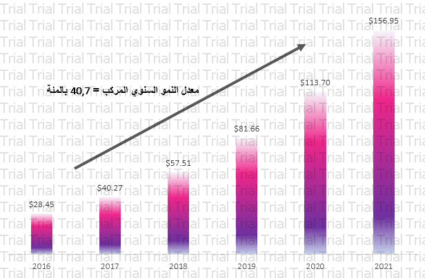

ظل الذكاء الاصطناعي لمدة طويلة مقصورًا على المشروعات البحثية الجامعية ومراكز الأبحاث والتطوير لدى مزودي التقنية. لكن في السنوات الأخيرة، بدأ تضمين عناصر الذكاء الاصطناعي في الهواتف الذكية والخدمات عبر الإنترنت لينتشر الذكاء الاصطناعي بالفعل على مستوى الشركات، ويُستخدم في تحسين خدماتها الداخلية والخارجية. حيث يُتوقع بلوغ الإنفاق العالمي على الذكاء الاصطناعي 52,24 مليار دولار عام 2021.
عادة ما تتصدر منطقة الشرق الأوسط وتركيا وأفريقيا طليعة الابتكار المتعلق بتقنيات مثل الهواتف النقالة، وإنترنت الأشياء، و«بلوك تشاين». وعلى نحو مشابه، تتبنى الحكومات والمؤسسات على مستوى المنطقة الذكاء الاصطناعي مع تطلعها إلى توفير خدمات جديدة وتحسين مستويات الكفاءة لديها. فعلى سبيل المثال، نرى الذكاء الاصطناعي في صميم طموحات التحول المنصوص عليها في مبادرة «رؤية 2030» الخاصة بالمملكة، بينما وضعت دولة الإمارات «استراتيجية الإمارات للذكاء الاصطناعي» لتواكب تطلع الحكومة إلى توفير جودة حياة أفضل.